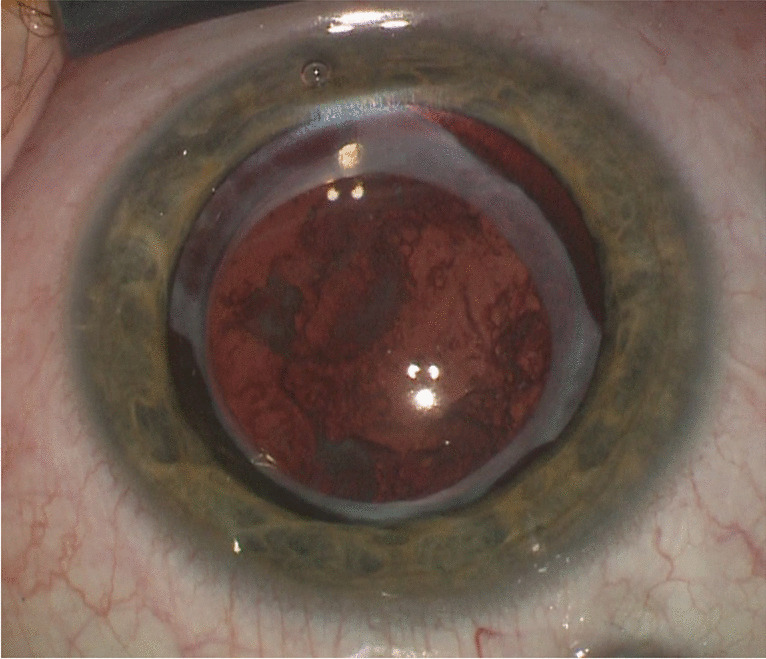
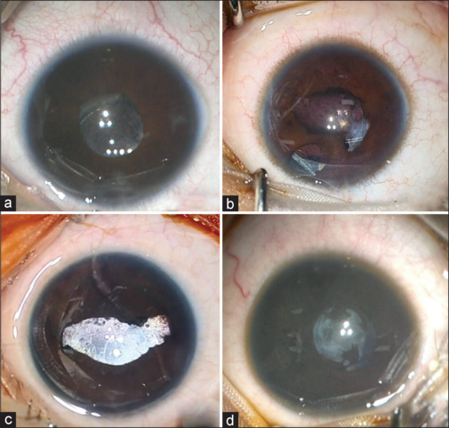
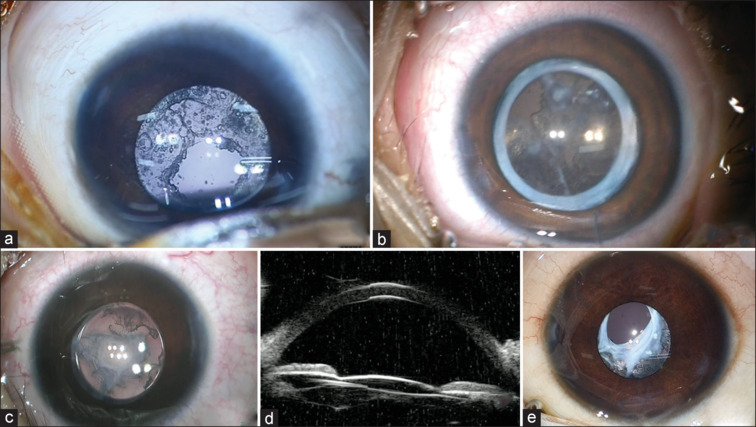
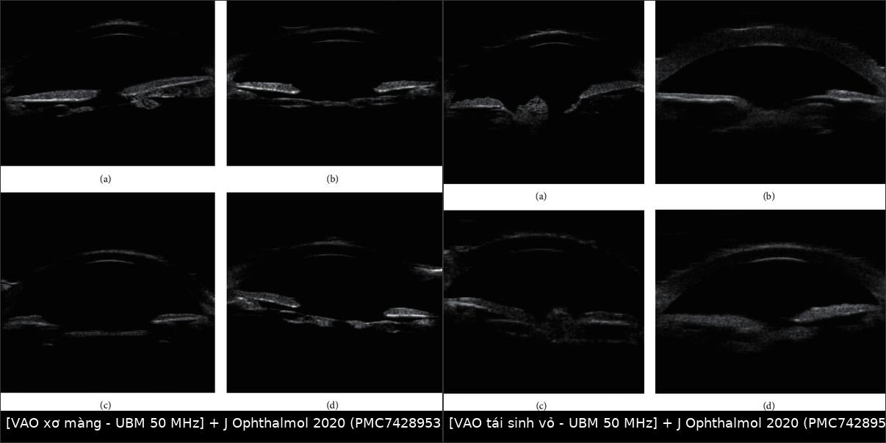
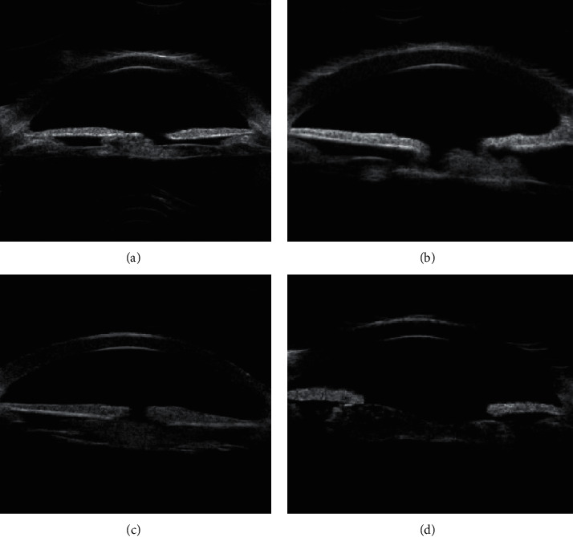
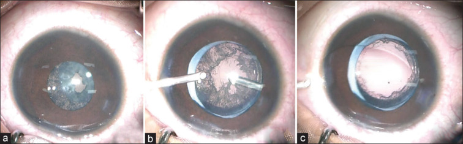
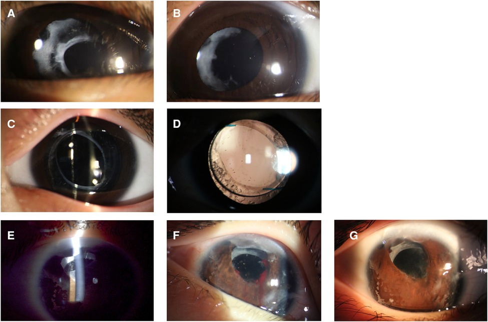

6211 — Đục trục quang (VAO) sau mổ đục thể thủy tinh bẩm sinh: màng xơ, tăng sinh và quyết định YAG hay mổ lại / Visual axis opacification after pediatric cataract surgery
Tags: pattern:duc-truc-quang pattern:manh-xo-dong-tu pattern:elschnig-pearls pattern:phimosis-bao pattern:tang-sinh-te-bao-bieu-mo vung:the-thuy-tinh vung:truc-quang vung:dong-tu vung:tien-phong vung:mat score:phan-loai-hinh-thai protocol:AS-OCT protocol:UBM protocol:YAG protocol:EUA protocol:cat-dich-kinh incidentaloma:khong
Mức chắc chắn (certainty): tổng hợp y văn (literature synthesis) — dựng từ loạt 33 mắt/28 trẻ có VAO được mổ bóc màng (Indian J Ophthalmol 2024, PMC11338403, CC BY-NC-SA 4.0), 144 mắt/101 nhũ nhi mổ trong 4 tháng đầu đời (Graefes Arch Clin Exp Ophthalmol 2023, PMC10667373, CC BY 4.0), 55 mắt/38 trẻ VAO phân loại bằng UBM (J Ophthalmol 2020, PMC7428953, CC BY), 20 mắt/17 trẻ YAG dưới an thần (Front Pediatr 2023, PMC10130455, CC BY), 13 mắt/9 trẻ YAG tư thế nằm ngửa dưới gây mê (Lasers Surg Med 2026, PMC13649103, CC BY-NC-ND), tổng quan phẫu thuật đục thể thủy tinh nhi (Asia Pac J Ophthalmol 2025, PMC12399275, CC BY-NC-ND), tổng quan bag-in-the-lens (Front Ophthalmol 2026, PMC13193927, CC BY) và so sánh đường vào mổ (Clinics 2019, PMC6644500, CC BY). Nhóm không có bệnh nhân của mình; chỗ chưa đủ chắc ghi "chưa rõ". Không ghi tên tác giả — attribution dùng tạp chí + năm + PMCID.
Câu chốt: VAO là biến chứng muộn phổ biến nhất của mổ đục thể thủy tinh ở trẻ, và là nguyên nhân mù lần hai hoàn toàn phòng được một phần. Sáu con số phải thuộc: (1) nếu để nguyên bao sau, đục trục quang xuất hiện ở gần như tất cả trẻ nhỏ; cắt bao sau mà không cắt dịch kính trước vẫn đục tới 60%; (2) cấy IOL ở trẻ < 2 tuổi: ~40% phải mổ lại vì VAO, hơn gấp đôi nhóm để aphakia; (3) nhũ nhi mổ trong 4 tháng đầu: mổ lại vì đục trục quang sau IOL 72% so với 16% khi không cấy IOL, màng đồng tử 40% vs 7%; (4) thời điểm: trung vị 6 tháng (1–22 tháng) sau mổ, trẻ càng nhỏ càng sớm; (5) hình thái: tăng sinh 54,5%, xơ 33,3%, hỗn hợp 12,1% — hình thái quyết định YAG hay mổ lại; (6) YAG ở trẻ có tái phát 23–30%, cần ~78 xung × 1,0–2,0 mJ (tổng ~115 mJ), và tăng nhãn áp thoáng qua 15%.
1. Tổng quan bệnh học – cơ chế hình ảnh
1.1 TẠI SAO gọi là "đục trục quang" chứ không phải "đục bao sau"
- Đục bao sau (posterior capsular opacification, PCO) là thuật ngữ của người lớn: màng mỏng trên bao sau còn nguyên. Ở trẻ, mờ trục quang vẫn xuất hiện dù đã mở bao sau — vì tế bào biểu mô thể thủy tinh (lens epithelial cells, LEC) còn lại ở xích đạo di chuyển theo màng hyaloid trước (khi không cắt dịch kính trước) hoặc theo bề mặt IOL, nên tài liệu nhi khoa dùng VAO làm tên gọi chung.
- Hai cơ chế, thường chồng lấp:
- Tăng sinh (proliferative): LEC xích đạo còn lại nguyên phân rất mạnh ở trẻ → di chuyển ra trục quang, tạo ngọc Elschnig (Elschnig pearls), vòng Soemmerring, hoặc tái sinh vỏ trong bao; hình thái này không phải màng xơ dày mà là khối tế bào bán trong suốt.
- Xơ (fibrotic): LEC chuyển dạng trung mô – biểu mô (epithelial–mesenchymal transition, EMT) thành nguyên bào sợi, tiết collagen + protein co rút → màng trắng đục, co kéo, dính mống mắt, phimosis bao trước, co đồng tử.
- Màng đồng tử do viêm: hàng rào máu – thuỷ dịch vỡ sau mổ → fibrin, collagen lắng quanh đồng tử → màng + dính mống mắt sau (posterior synechiae). Đây là lý do kiểm soát viêm sau mổ là một phần của dự phòng, không phải "chuyện phụ".
- TẠI SAO trẻ nhỏ nguy cơ cao gấp nhiều lần người lớn: (1) hoạt tính nguyên phân của LEC cao nhất trong năm đầu đời; (2) bao sau + màng hyaloid trước là giàn giáo (scaffold) — còn giàn giáo là còn đường di chuyển; (3) phản ứng viêm sau mổ mạnh hơn; (4) mắt nhỏ, tiền phòng nông, khó bóc sạch vỏ xích đạo; (5) dị tật phối hợp (PFV, u nhau thai tồn tại, loạn sản tiền phòng) làm nguy cơ cao hơn.
- TẠI SAO "không cấy IOL" lại ít VAO hơn ở nhũ nhi: IOL ép mặt sau bao/IOL vào bao tạo hàng rào cơ học (bờ sau IOL sắc) chặn LEC, nhưng đồng thời bề mặt IOL là giàn giáo thứ hai và IOL nhỏ đặt lệch/lệch bao lại mở đường cho LEC. Vì vậy aphakia thấp hơn nhưng không bằng 0, và kỹ thuật đặt IOL (trong bao, capture, bag-in-the-lens) quan trọng hơn việc "có IOL hay không".
1.2 Số liệu nằm lòng (thời điểm, tỉ lệ, yếu tố nguy cơ)
| Chỉ số | Giá trị | Nguồn |
|---|---|---|
| Tuổi mổ thì đầu (loạt VAO) | trung vị 7 tháng (2–96) | PMC11338403 |
| Khoảng cách mổ → phát hiện VAO | trung vị 6 tháng (1–22); trẻ nhỏ sớm hơn | PMC11338403 |
| Thời điểm chẩn đoán VAO (đoàn hệ 10 năm) | 13,34 ± 14,63 tháng | PMC6644500 |
| Hình thái VAO (33 mắt) | tăng sinh 18 (54,5%) · xơ 11 (33,3%) · hỗn hợp 4 (12,1%) | PMC11338403 |
| Nhũ nhi mổ < 4 tháng: màng đồng tử | 40% (có IOL) vs 7% (aphakia) | PMC10667373 |
| Nhũ nhi mổ < 4 tháng: mổ lại vì VAO | 72% (có IOL) vs 16% (aphakia) | PMC10667373 |
| Cấy IOL khi < 2 tuổi | ~40% cần mổ lại vì VAO, > 2 lần nhóm aphakia | PMC12399275 |
| Để bao sau nguyên ở nhũ nhi | VAO gần như chắc chắn; cắt bao sau không cắt dịch kính trước: tới 60% | PMC12399275, PMC13193927 |
| Bag-in-the-lens (BIL) so với IOL trong bao | mổ lại 17,1% vs 38% (64 vs 50 mắt); VAO ở nhũ nhi 5,6–8,7% | PMC13193927 |
| Đường vào mổ (giác mạc vs pars plicata) | mổ bổ sung 51,9% vs 27,6% (p = 0,113); VAO trong số mổ lại 46,2% vs 12,5% | PMC6644500 |
| Phân loại UBM (55 mắt) | xơ màng 28 mắt · tái sinh vỏ 20 mắt · hỗn hợp 7 mắt | PMC7428953 |
| YAG ở trẻ: tái phát | 30% (20 mắt, an thần) · 23% (13 mắt, gây mê) | PMC10130455, PMC13649103 |
| YAG ở trẻ: thông số | 77,8 ± 41,8 xung, 1,0–2,0 mJ/xung, tổng 115,3 ± 65,6 mJ (56–276) | PMC13649103 |
| YAG ở trẻ: kết quả | thị lực 0,85 ± 0,60 → 0,64 ± 0,73 logMAR (p = 0,002); tăng nhãn áp thoáng qua 15% | PMC13649103 |
| Mổ bóc màng chọn theo UBM | tái phát chung 3,46% | PMC7428953 |

Mắt giả thể thủy tinh của nhũ nhi: khối tế bào thủy tinh thể tăng sinh lan vào khoang đồng tử phía sau IOL — đúng cơ chế "IOL là giàn giáo thứ hai". Ảnh chụp đèn khe, nguyên bản. Nguồn: Graefes Arch Clin Exp Ophthalmol 2023 (PMC10667373), CC BY 4.0.1.3 TẠI SAO hình ảnh trông như vậy (đèn khe – UBM – AS-OCT – B-scan)
- Đèn khe + ánh sáng ngược (retroillumination): màng xơ gồm collagen/fibrin có chiết suất khác thuỷ dịch → tán xạ ánh sáng trắng, nên soi ngược thấy mất vùng đỏ đồng tử (red reflex) đúng chỗ màng. Đây là dấu rẻ tiền nhất và là lý do phải soi ngược ở mọi lần khám sau mổ, kể cả khi trẻ "vẫn nhìn".
- UBM 35–50 MHz: độ phân giải trục ~20–50 µm, xuyên qua mống mắt, bờ IOL, bao để đo màng sau đồng tử mà đèn khe không thấy khi đồng tử nhỏ/dính. Hình thái UBM tương ứng hình thái lâm sàng:
- Xơ màng: đường tăng âm liên tục, mảnh hoặc hình thoi dưới mống mắt (màng collagen).
- Tái sinh vỏ: echo không đều, xen kẽ giảm âm trong bao/quanh bao (khối tế bào, "ngọc").
- Hỗn hợp: bề mặt bao trước–sau dày không đều + echo tăng + phiến/khối không đều trong bao, kèm đường tăng âm liên tục ở mặt sau bao.
- AS-OCT tiền phòng: cho lát cắt màng và tương quan với mặt IOL — đo được độ dày màng (µm), phát hiện dính mống mắt, phimosis, khoảng hở giữa màng và IOL; hạn chế: không xuyên qua màng xơ dày đặc (bóng), và trẻ phải ngồi yên.
- B-scan 10 MHz: không dùng để chẩn đoán màng (độ phân giải ngang 0,3–0,5 mm, kém hơn UBM nhiều) — chỉ dùng để loại trừ bong võng mạc/dịch kính đục khi không soi được đáy mắt (xem bài 6210).
- TẠI SAO YAG khó hơn ở trẻ: màng dày, nhiều collagen và tế bào, mỗi xung chỉ 1,0–2,0 mJ nhưng phải bắn ~78 xung (tổng ~115 mJ) để mở đủ rộng; mảnh vụn còn lại tái tăng sinh → tái phát 23–30%; năng lượng cao trên IOL ưa nước gây rỗ (pitting) IOL, và cú sốc âm làm tăng nhãn áp thoáng qua 15%.
2. Mẫu hình + chẩn đoán phân biệt theo vị trí (gamut)
- Mẫu hình (pattern): trẻ đã mổ đục thể thủy tinh (aphakia hoặc pseudophakia), 1–22 tháng sau mổ (có thể muộn hơn nhiều năm), không đau, nhìn kém dần, mất đỏ đồng tử, có thể kèm lác mới, rung giật nhãn cầu, dính mống mắt, đồng tử co nhỏ (phimosis). Khám: màng trắng/bán trong suốt ngay sau đồng tử, có thể dày đặc, co kéo, hoặc lấm tấm ngọc Elschnig.
- Gamut theo hình thái (morphology — PMC11338403):
- Xơ (fibrotic, 33,3%): màng trắng đục, dày, co kéo, thường dính mống mắt sau, phimosis bao trước, IOL có thể lệch/ra trước. YAG kém hiệu quả (màng dày), dễ tái phát; ưu tiên mổ bóc màng.
- Tăng sinh (proliferative, 54,5%): ngọc Elschnig, vòng Soemmerring, tái sinh vỏ lan qua lỗ mở bao sau nhỏ hoặc quanh bờ IOL. Nếu màng mỏng, tế bào rời → YAG hiệu quả; nếu khối đặc, lan sau IOL → cắt dịch kính trước + bóc.
- Hỗn hợp (combined, 12,1%): cả hai; quyết định theo phần chiếm ưu thế và theo vị trí so với IOL.
- Gamut theo vị trí so với IOL:
- Trước IOL: màng đồng tử/fibrin, phimosis bao trước, dính mống mắt — hay gặp sau mổ có biến chứng/inflammation.
- Sau IOL – trong bao: VAO "kinh điển" sau mở bao sau nhỏ (PCCC 2 mm); UBM thấy IOL không nằm trong rãnh bao → LEC lách qua.
- Sau IOL – sau bao: tái sinh vỏ, màng hyaloid trước dày (khi không cắt dịch kính trước).
- Tại IOL: đục/calci hoá IOL (thường IOL ưa nước) — không phải VAO, YAG không có ích.
- Bốn câu hỏi trước khi quyết định: (1) màng dày hay mỏng, xơ hay tế bào? (2) màng trước hay sau IOL, IOL có trong bao/rãnh bao? (3) đồng tử có dãn được và dính mống mắt không? (4) đáy mắt có bong võng mạc không (bài 6210) và nhãn áp thế nào?

(a) Viêm kèm VAO xơ ở mắt IOL lệch, mống mắt bắt inferior; (b) VAO xơ + dính mống mắt sau; (c) VAO xơ đặc ở mắt giả thể thủy tinh; (d) VAO xơ ở mắt aphakia. Đây là 4 hình thái xơ — nhóm YAG kém hiệu quả nhất. Nguồn: Indian J Ophthalmol 2024 (PMC11338403), CC BY-NC-SA 4.0, nguyên bản (giữ nhãn a–d).
*(a) Khối tăng sinh lấn vào trục quang; (b) VAO tăng sinh sau IOL đặt tốt trong bao; (c) VAO hỗn hợp ở mắt IOL một mảnh đặt rãnh bao; (d) UBM cùng mắt (c): IOL nghiêng, mép quang học không nằm trong rãnh bao → LEC lách qua trục quang; (e) phimosis bao trước + ngọc Elschnig che trục quang. Nguồn: Indian J Ophthalmol 2024 (PMC11338403), CC BY-NC-SA 4.0, nguyên bản.*3. Bảng so sánh phân biệt (ma trận đối chiếu)
| Thực thể (entity) | Hình ảnh điển hình | Chốt vào (rule-in) | Chốt loại (rule-out) | Gợi ý xác nhận |
|---|---|---|---|---|
| VAO xơ (fibrotic) sau mổ TTT nhi | Màng trắng đục, dày, co kéo, dính mống mắt sau, phimosis bao trước; UBM: đường tăng âm liên tục/hình thoi dưới mống mắt | Màng đục co kéo + dính mống mắt + UBM đường tăng âm liên tục | Màng lấm tấm ngọc, rời rạc, không co kéo → thể tăng sinh | Đèn khe + soi ngược, UBM 50 MHz, AS-OCT |
| VAO tăng sinh (proliferative) | Ngọc Elschnig, vòng Soemmerring, tái sinh vỏ quanh bờ IOL/lỗ PCCC nhỏ; UBM: echo không đều, xen giảm âm | Ngọc/khối tế bào + lỗ mở bao sau nhỏ + UBM echo hỗn hợp | Màng trắng đặc co kéo → thể xơ | UBM, đèn khe sau dãn đồng tử |
| Màng đồng tử do viêm (fibrin) | Màng mỏng, dính, hình mạng trên đồng tử, dính mống mắt 360°, tiền phòng có tơ fibrin, xuất hiện sớm 1–4 tuần | Xuất hiện sớm + tơ fibrin + dính mống mắt lan rộng | Màng muộn, khu trú sau IOL → VAO | Đèn khe, đáp ứng corticoid tại chỗ |
| Phimosis bao trước (ACCC) | Lỗ mở bao trước co nhỏ, bờ dày trắng, đồng tử bị kéo, có thể IOL lệch | Bờ lỗ bao trước dày, co nhỏ + đồng tử méo | Màng sau IOL → VAO | Đèn khe, AS-OCT (độ dày bờ bao) |
| Đục/calci hoá IOL | Đốm trắng trong thân IOL, bờ rõ, không co kéo, thường IOL ưa nước | Tổn thương nằm TRONG quang học IOL, bờ sắc | Màng trước/sau IOL → VAO | Đèn khe, AS-OCT; YAG không có ích |
| Sót chất nhân/thể thủy tinh | Mảnh trắng đục trong bao/tiền phòng, bờ góc cạnh, có thể viêm màng bồ đào | Mảnh có góc cạnh + viêm + tiền sử mổ phức tạp | Màng lan toả mỏng → VAO | Đèn khe, UBM; cần lấy bỏ, không YAG |
| Màng hyaloid trước dày (không cắt dịch kính trước) | Màng mỏng, trong, căng ngang sau đồng tử, di động nhẹ; UBM: màng mảnh tách khỏi bao | Màng mỏng căng ngang + tiền sử không cắt dịch kính trước | Màng dày dính bao → VAO xơ | UBM động, đèn khe |
| Viêm nội nhãn mạn/giả viêm nội nhãn | Mủ tiền phòng, fibrin, dính đồng tử, đau, nhãn áp thấp, đục dịch kính | Đau + mủ tiền phòng + đục dịch kính | Chỉ màng trục quang, tiền phòng trong → VAO | B-scan, cấy thuỷ dịch/dịch kính |
| Bong võng mạc che trục quang | Đỏ đồng tử mất nhưng màng nằm SAU, di động; B-scan màng dính đĩa thị | B-scan màng dính đĩa thị + bong | Màng ngay sau đồng tử, cố định → VAO | B-scan, soi đáy mắt 360° (bài 6210) |

*Trái — VAO xơ màng: đường tăng âm liên tục, mảnh ngay dưới mống mắt. Phải — VAO tái sinh vỏ: echo không đều, xen giảm âm trong vùng bao. Khác biệt này quyết định YAG (trái, nếu mỏng) hay cắt dịch kính trước + bóc (phải). Ảnh ghép letterbox, nguyên tỷ lệ. Nguồn: J Ophthalmol 2020 (PMC7428953), CC BY 4.0.*Dấu hiệu "màng giả" và "màng thật"
- Màng thật (VAO): cố định, dính vào bao/IOL, mất đỏ đồng tử đúng vùng, không đổi khi đảo mắt mạnh, có co kéo/dính mống mắt.
- Màng giả: fibrin mỏng (tan sau 1–2 tuần khi kiểm soát viêm), màng hyaloid (mỏng, di động), phản xạ ánh sáng trên IOL (đổi theo góc chiếu) — không được YAG vì không phải nguyên nhân mờ thực thể.
- "Màng trắng" có thể là IOL: trước khi YAG, bắt buộc xác định mặt phẳng IOL (đèn khe khe sáng hẹp + AS-OCT) — YAG vào thân IOL làm rỗ quang học và giảm thị lực vĩnh viễn.
4. Protocol + phân loại hình thái và ngưỡng xử trí
4.1 Quy trình khám khi trẻ "nhìn kém sau mổ đục thể thủy tinh"
- Thị lực theo tuổi (preferential looking/Lea/Snellen) + khúc xạ + nhãn áp — nhưng thị lực kém không định vị được nguyên nhân: luôn soi đèn khe + soi ngược.
- Đèn khe: dãn đồng tử tối đa; đánh giá màng trước/sau IOL, dính mống mắt, phimosis, ngọc Elschnig, vị trí IOL (trong bao/rãnh bao/lệch).
- Soi ngược (retroillumination) để bản đồ vùng mất đỏ đồng tử — ghi % trục quang bị che (ước lượng theo đường kính đồng tử) và vị trí.
- AS-OCT tiền phòng (nếu hợp tác): độ dày màng (µm), khoảng cách màng–IOL, dính mống mắt.
- UBM 35–50 MHz: khi đồng tử nhỏ/dính, PCO dày, IOL nghiêng, aphakia — phân loại xơ / tái sinh / hỗn hợp và xác định IOL có trong rãnh bao hay không.
- B-scan 10 MHz: chỉ khi không soi được đáy mắt — loại trừ bong võng mạc (bài 6210), đục dịch kính, sót chất nhân.
- Khám dưới mê (examination under anesthesia, EUA): trẻ không hợp tác, chậm phát triển, hoặc cần đo nhãn áp/soi 360° trước quyết định.
- Ghi lại ảnh (đèn khe/AS-OCT/UBM) ở mỗi lần khám — vì VAO tiến triển theo tháng, so ảnh quan trọng hơn một lần đo.
4.2 Ngưỡng quyết định: YAG hay mổ lại
- YAG khi: màng mỏng – tế bào, nhìn rõ mặt phẳng IOL, đồng tử dãn đủ, trẻ hợp tác hoặc gây mê/an thần được, và không có bong võng mạc. Thông số thực tế ở trẻ: 1,0–2,0 mJ/xung, trung bình 78 xung, tổng ~115 mJ; mở rộng hơn lỗ tối thiểu để tránh tái phát.
- Mổ lại (anterior segment revision: cắt dịch kính trước ± bóc màng, đường limbus hoặc pars plana) khi: màng dày xơ, tái sinh vỏ khối đặc, hỗn hợp, IOL lệch/rãnh bao, dính mống mắt nhiều, YAG thất bại ≥ 1 lần, hoặc không thể cố định mắt để YAG.
- Chọn theo UBM (55 mắt — PMC7428953): xơ màng → YAG bao sau; tái sinh vỏ → cắt dịch kính trước; hỗn hợp → cắt dịch kính trước + đầu capsulotomy RF; tái phát chung 3,46%.
- Không YAG khi chưa loại trừ bong võng mạc: YAG trên mắt đang bong làm bong nặng thêm và không cải thiện thị lực (bài 6210).
- Sau YAG: đo nhãn áp sau 1 giờ (tăng thoáng qua 15%), khám đáy mắt, hẹn 1 tuần – 1 tháng; dặn gia đình tái phát 23–30% nên mờ lại = khám ngay, không chờ lịch.
- Kiểm soát viêm là điều trị, không phải hỗ trợ: corticoid tại chỗ đủ liều, giảm liều chậm; cycloplegic để phá giàn giáo dính mống mắt.
4.3 Dự phòng (khi mổ thì đầu) — bằng số
- Cắt bao sau (posterior capsulorhexis/capsulectomy) + cắt dịch kính trước ở mọi trẻ < 5–7 tuổi (kể cả khi cấy IOL): để bao sau nguyên = VAO gần như chắc chắn; cắt bao sau không cắt dịch kính trước = tới 60% vẫn đục.
- Kỹ thuật "giữ tế bào trong bao": optic capture (kẹp quang học IOL qua lỗ bao sau) và bag-in-the-lens (BIL) — BIL cho mổ lại 17,1% vs 38% so với IOL trong bao, VAO ở nhũ nhi 5,6–8,7%.
- Tránh IOL ở trẻ < 2 tuổi khi không có lý do mạnh:** **~40%** phải mổ lại vì VAO (gấp **> 2 lần aphakia); nhiều phẫu thuật viên không cấy IOL dưới 2 tuổi.
- Đường vào: pars plicata/pars plana cho cắt bao sau + cắt dịch kính có mổ bổ sung 27,6% vs 51,9% (đường giác mạc) — khác biệt chưa có ý nghĩa (p = 0,113) nhưng VAO trong số mổ lại thấp hơn rõ (12,5% vs 46,2%).
- Theo dõi: vì trung vị phát hiện 6 tháng và có ca tới 22 tháng, lịch thực dụng: 1 tuần – 1 tháng – 3 tháng – 6 tháng – 12 tháng, sau đó mỗi 3–6 tháng tới hết tuổi mẫu giáo (khi trẻ bắt đầu hợp tác đo thị lực), rồi mỗi 6–12 tháng tới hết thiếu niên; luôn soi ngược + soi 360°; EUA khi không soi được.
flowchart TD
A[Trẻ đã mổ đục thể thủy tinh, nhìn kém hoặc mất đỏ đồng tử] --> B[Đèn khe + soi ngược + nhãn áp]
B --> C{Thấy màng ở trục quang?}
C -->|Không| D[Tìm nguyên nhân khác: nhược thị, lệch khúc xạ, bong võng mạc, glôcôm]
C -->|Có| E[AS-OCT nếu hợp tác + UBM 35 đến 50 MHz]
E --> F{Màng dày xơ, khối tế bào đặc, hay IOL lệch?}
F -->|Mỏng, tế bào rời, IOL đúng mặt phẳng| G{Loại trừ bong võng mạc bằng B-scan và soi đáy mắt}
F -->|Dày xơ, tái sinh đặc, hỗn hợp, IOL lệch| H[Mổ lại: cắt dịch kính trước ± bóc màng]
G -->|Có bong| I[Chuyển xử trí bong võng mạc, không YAG]
G -->|Không bong| J[YAG 1,0 đến 2,0 mJ, đủ rộng, dưới gây mê nếu cần]
J --> K[Đo nhãn áp sau 1 giờ + khám đáy mắt]
K --> L{Trục quang sạch?}
L -->|Không hoặc tái phát| H
L -->|Có| M[Theo dõi 1 tuần, 1 tháng; dặn mờ lại khám ngay]
H --> M
5. Biến thể bình thường và cạm bẫy
- "Mờ sau mổ = nhược thị" — cạm bẫy số 1: nhược thị không làm mất đỏ đồng tử. Mọi trẻ chậm tiến bộ thị lực phải soi ngược; bỏ sót VAO = mất cửa sổ nhạy cảm của nhược thị.
- YAG "bắn cho xong" trên màng dày: màng xơ cần năng lượng cao, dễ rỗ IOL, tăng nhãn áp, viêm, và vẫn đục → tái phát 23–30%. Nếu UBM nói xơ/hỗn hợp, chọn mổ lại ngay từ đầu.
- Nhầm IOL đục với VAO: đốm trắng trong thân IOL không đáp ứng YAG; bắn YAG chỉ làm hỏng quang học. Xác định mặt phẳng IOL trước.
- Bỏ sót bong võng mạc "ẩn" sau màng: trẻ không kêu, màng che cả trục quang; B-scan + soi 360° trước YAG/mổ lại. Đây là lý do bài 6210 và 6211 phải đọc cùng nhau.
- Không dãn được đồng tử ≠ không có VAO: dính mống mắt sau che 2–4 mm ngoại vi; UBM là cửa sổ duy nhất — không kết luận "sạch" khi chưa UBM.
- Màng fibrin sớm bị YAG oan: trong 1–4 tuần đầu, màng mỏng + tơ fibrin đáp ứng corticoid; YAG lúc này gây viêm thêm và không giải quyết nguyên nhân.
- Phimosis bao trước tiến triển âm thầm: bờ bao trước dày dần, kéo lệch IOL, đồng tử méo; cần theo dõi ảnh và mổ trước khi IOL lệch nhiều.
- Tái phát sau YAG không phải "thất bại của YAG" mà là sinh học của trẻ: LEC còn ở xích đạo. Vì vậy mổ lại lần hai thường phải kèm cắt dịch kính trước để loại giàn giáo, không chỉ bóc màng.
- Đừng quên mắt còn lại: VAO thường hai bên ở đục thể thủy tinh bẩm sinh hai bên; khám cả hai mắt cùng lần, kể cả mắt "tốt".
6. Tự lượng giá — Blind Quiz
Ca 1 — Bé 14 tháng, mổ đục thể thủy tinh bẩm sinh hai bên lúc 2 tháng (có IOL), nay mất đỏ đồng tử mắt phải. UBM dưới đây.

- Câu hỏi: mô tả echo trong bao? Thuộc thể nào trong phân loại UBM? YAG hay mổ lại?
Bấm để hiện đáp án (findings + chẩn đoán)
- Dấu hiệu: bề mặt bao trước–sau dày không đều, echo tăng; phiến/khối không đều xen giảm âm trong bao; đường tăng âm liên tục ở mặt sau bao → VAO hỗn hợp (mixed).
- Vì sao không chỉ YAG: thành phần khối tế bào đặc sẽ tái phát; phần màng xơ cần năng lượng cao, dễ rỗ IOL.
- Xử trí: cắt dịch kính trước + bóc màng (đường limbus/pars plana), bóc sạch vỏ xích đạo; YAG chỉ dùng cho phần màng mỏng còn lại sau mổ.
- Nguồn ảnh: J Ophthalmol 2020 (PMC7428953), CC BY 4.0 — ảnh UBM của VAO hỗn hợp, không phải ca lâm sàng cụ thể.
Ca 2 — Bé 3 tuổi, mổ đục thể thủy tinh + IOL 8 tháng trước, nay "nhìn kém". Đèn khe: đồng tử dãn 6 mm, có khối trắng lấm tấm sau IOL.

- Câu hỏi: mô tả (a) và (b)? Vì sao khối này lách được ra trục quang? Cần đo gì trước YAG?
Bấm để hiện đáp án (findings + chẩn đoán)
- Dấu hiệu: (a) ngọc Elschnig tăng sinh che trục quang; (b) sau khi hút ngọc, lộ lỗ mở bao sau nhỏ ~2 mm (PCCC); bờ mở bao trước rất rộng (ACCC lớn).
- Cơ chế: lỗ PCCC quá nhỏ không đủ để IOL ép sát bao → khe hở cho LEC di chuyển ra trục quang. Đây là VAO tăng sinh điển hình.
- Trước YAG: xác định mặt phẳng IOL (AS-OCT/đèn khe khe hẹp), loại trừ bong võng mạc (B-scan), đo nhãn áp, và đánh giá đồng tử có dãn đủ.
- Xử trí: YAG mở rộng vùng trục quang (1,0–2,0 mJ/xung, tổng có thể > 100 mJ), theo dõi tái phát 23–30%; nếu ngọc tái sinh nhanh → mổ lại + cắt dịch kính trước.
- Nguồn ảnh: Indian J Ophthalmol 2024 (PMC11338403), CC BY-NC-SA 4.0, nguyên bản (giữ nhãn a/b).
Ca 3 — Bé 5 tuổi, mổ đục thể thủy tinh bẩm sinh + IOL, màng trắng mỏng sau IOL, hợp tác kém. Ảnh trước và sau can thiệp.

- Câu hỏi: (A) so với (B) thay đổi gì? Vì sao phải gây mê/an thần? Nguy cơ nào phải đo ngay sau thủ thuật?
Bấm để hiện đáp án (findings + chẩn đoán)
- Dấu hiệu: (A) màng trắng mỏng kèm di tích bao trước che một phần trục quang; (B) trục quang thông thoáng sau YAG mở màng; các cặp (C,D) và (E,F,G) là màng sau IOL và co bao trước trước/sau YAG.
- Chẩn đoán: VAO thể màng mỏng/tăng sinh — phù hợp YAG hơn mổ lại.
- Vì sao gây mê/an thần: trẻ 5 tuổi hợp tác kém, cần cố định mắt tuyệt đối; nghiên cứu dùng dexmedetomidine 3 µg/kg đường mũi, trẻ ngồi tựa cằm vào đèn khe laser (tuổi nhỏ nhất 5 tháng).
- Theo dõi ngay: nhãn áp sau 1 giờ (tăng thoáng qua 15%), đáy mắt (loại trừ bong/lỗ rách), rồi 1 tuần – 1 tháng; dặn mờ lại = khám ngay vì tái phát 30%.
- Nguồn ảnh: Front Pediatr 2023 (PMC10130455), CC BY 4.0, nguyên bản (giữ nhãn A–G).
Bài liên quan chéo
- 400 – Tổng quan Mắt & thị giác
- 6210 – Bong võng mạc sau mổ đục thể thủy tinh bẩm sinh (phải loại trừ trước khi YAG)
- 1643 – Glôcôm sau mổ đục thể thủy tinh bẩm sinh (cùng nhóm biến chứng muộn)
- 413 – PFV/PHPV: dây xơ thể thủy tinh (nguy cơ VAO cao hơn)
- 1487 – Bong võng mạc ở mắt giả thể thủy tinh sau phaco
- 1480 – Đục thể thủy tinh sau bóc màng trước võng mạc (ERM)
- 1467 – Màng trước võng mạc (ERM) (phân biệt màng sau IOL với màng võng mạc)
- 1443 – Viêm màng bồ đào do thấu kính (màng fibrin do viêm)
- 1451 – Keratoconus & CXL (khúc xạ sau mổ ở trẻ)
Ảnh
- Tên file theo quy ước
6211_..._Modality_SourceID.jpg; nguồn + giấy phép từng ảnh ởimages/CREDITS.md. - Không ảnh nào là "ca VAO của nhóm": ảnh IJO là các hình thái VAO trong loạt 33 mắt; ảnh UBM là 3 thể UBM; ảnh Graefes là tăng sinh tế bào sau IOL ở nhũ nhi; ảnh Frontiers là trước/sau YAG ở trẻ — đã ghi rõ trong chú thích.
- 1 composite (
composite_vao_ubm.jpg) ghép 2 ảnh CC BY bằngtools/make_composite.py(letterbox nền đen, giữ tỷ lệ, dải attribution).
Không dùng để chẩn đoán độc lập khi chưa có người hướng dẫn.